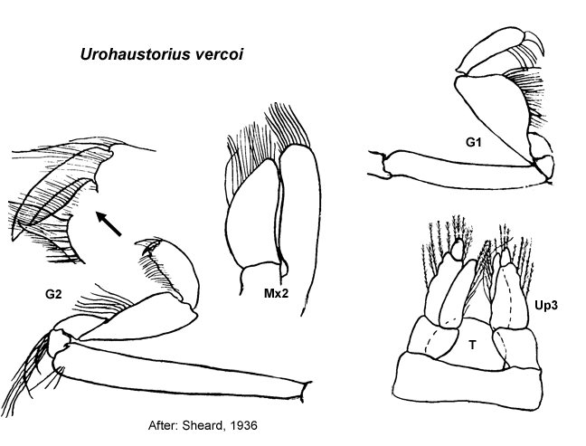

Urohaustorius vercoi Sheard, 1936: 449, fig. 1 (part). –Barnard & Drummond, 1982: 97
Description.Antenna 1 accessory flagellum 5 -articulate; primary flagellum 6–8 -articulate. Maxilla 1 palp with some setae displaced subapically.
Gnathopod 1 simple; coxa small, coxa slightly larger than coxa 2. Gnathopod 2 minutely chelate, propodus palm transverse or obtuse. Pereopod 3 coxa large, larger than coxa 4. Pereopod 4 coxa large. Pereopod 5 dactylus with robust setae. Pereopod 7 coxa without long posterior spine; basis fully expanded.
Uropod 1 inner ramus well devloped, subequal in length to outer ramus, not fused to peduncle. Uropod 2 inner ramus well devloped, subequal in length to outer ramus, not fused to peduncle. Telson entire.
Habitat. Among algae (mostly Rhodophyceae).

___________________________
This
publication should be cited as: Kilgallen, N.M. & Lowry, J.K. 2008.
Urohaustoriidae (Amphipoda): World Genera and Species. Version 1. 1
January 2008. http://crustacea.net.